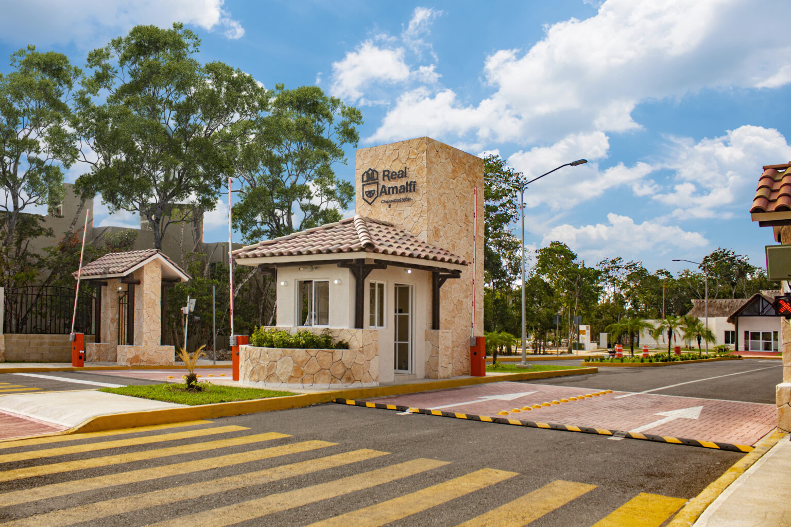
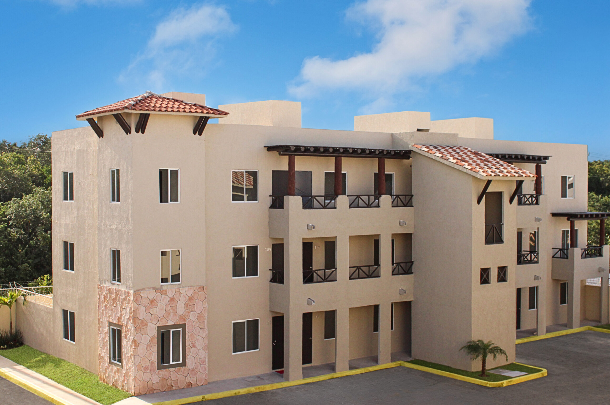
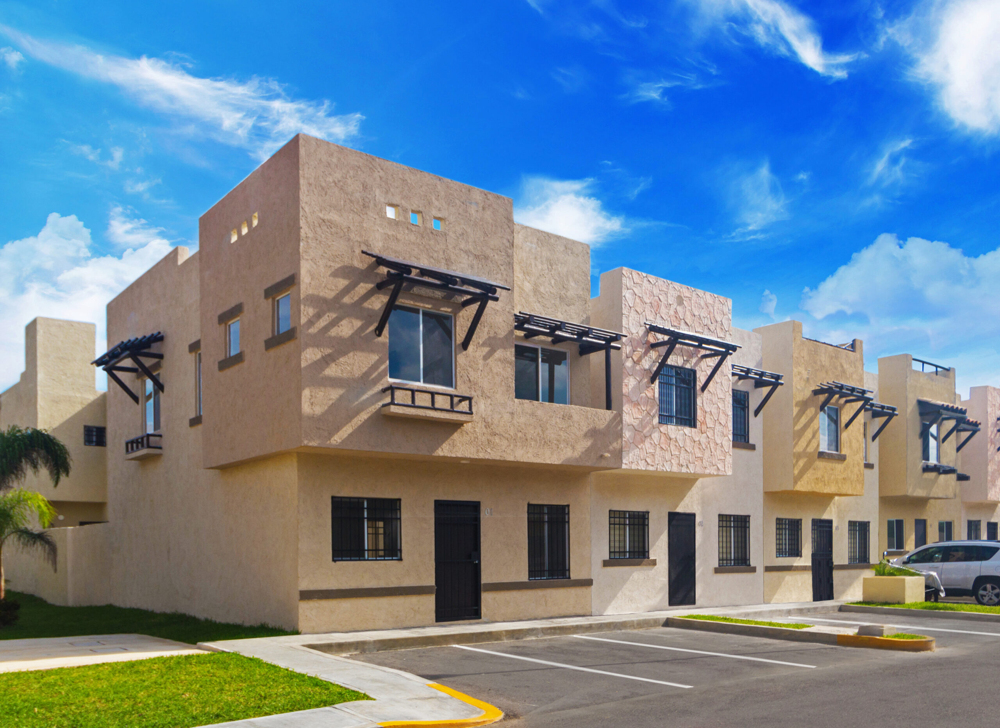
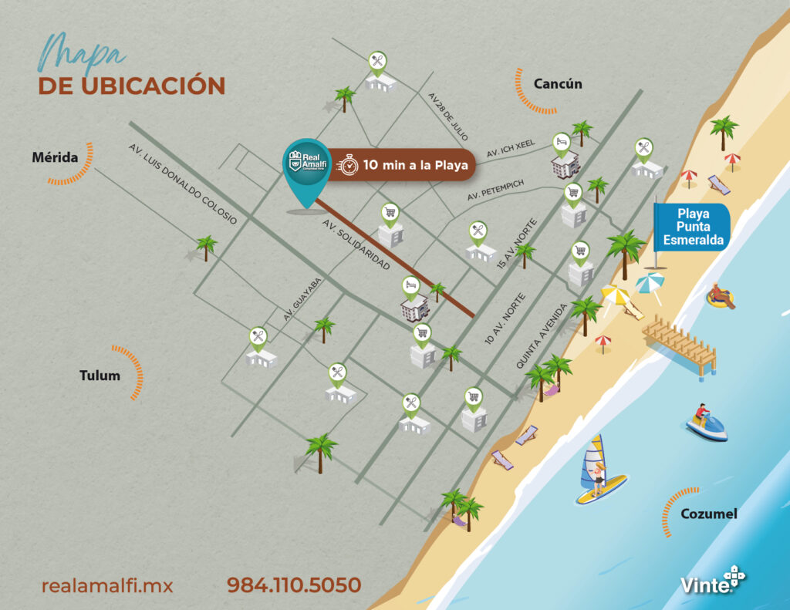

Asesoria personalizada para Real Amalfi
Yahir te orienta sobre presupuesto, modelo ideal, disponibilidad, ubicacion y siguiente paso de compra.
Asesor inmobiliario en Playa del Carmen
Yahir Pulido, asesor inmobiliario de Real Amalfi, te acompaña para comprar vivienda en Playa del Carmen con informacion clara sobre modelos, precios publicados, amenidades, entrega inmediata y opciones de credito.
Real Amalfi Playa del Carmen publica desarrollos integrales con amenidades para mejorar la calidad de vida: acceso controlado, camaras de vigilancia, aumento de plusvalia y Sistema de Certificacion de Construccion Sostenible.
Venta de casas y departamentos
Antes de elegir una vivienda en Real Amalfi, compara ubicacion, metros de construccion, numero de recamaras, estacionamiento, credito y tiempos de entrega con acompañamiento profesional.
Yahir te orienta sobre presupuesto, modelo ideal, disponibilidad, ubicacion y siguiente paso de compra.
Real Amalfi informa que acepta esquemas de credito y ofrece ayuda para encontrar la opcion de financiamiento adecuada.
Agenda visita guiada o solicita recorrido virtual antes de decidir entre departamento o casa.
Amenidades para familias: casa club, ludoteca, juegos infantiles, palapas de lectura y parque central.

Real Amalfi Playa del Carmen
Playa del Carmen es uno de los mercados mas dinamicos de la Riviera Maya. Real Amalfi suma ubicacion, amenidades y modelos de casas y departamentos pensados para familias que buscan patrimonio, comodidad y plusvalia.
Modelos publicados por Real Amalfi
Compara modelos publicados por Real Amalfi Playa del Carmen. Los precios de contado pueden variar por prototipo, ubicacion, financiamiento, gastos notariales y vigencia comercial.

Desde $1,749,000*
Desde $2,099,000*

Desde $2,234,000*
Desde $2,679,000*
*Informacion tomada del sitio oficial de Real Amalfi consultado el 6 de julio de 2026. Vigencia comercial publicada: 31 de marzo de 2026. Confirmar disponibilidad y precio final con asesoria directa.
Atencion profesional
Comparacion de modelos, visita a Real Amalfi, revision de credito, documentos y cierre con seguimiento personal.
Ubicacion
Av. Paseo del Mayab MZA 22 LT 2, Playa del Carmen, Quintana Roo, C.P. 77714.
Horario publicado: lunes a domingo de 09:00 a 19:00 hrs. Telefono de oficina: (55) 984 110 5050.
Abrir mapa
Preguntas frecuentes
Si. El sitio oficial publica departamentos Burgos y Vizzini, asi como casas Bonanova y Lerida.
Real Amalfi muestra entrega inmediata en los modelos publicados. La entrega final debe confirmarse segun inventario, firma y condiciones vigentes.
El sitio oficial indica que aceptan esquemas de credito y que ayudan a encontrar financiamiento acorde a necesidades y posibilidades.
Porque centraliza la informacion, explica diferencias entre modelos y acompaña el proceso de visita, credito y compra con trato directo.